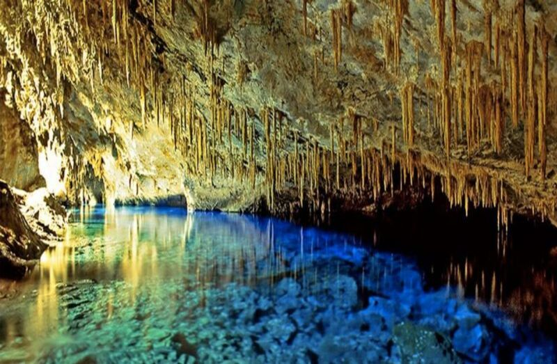
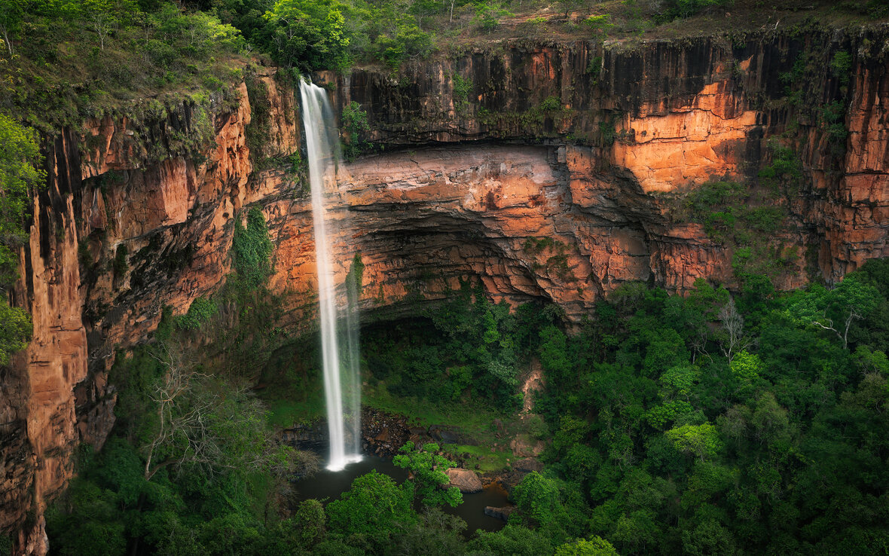

-PhotoRoom.png-PhotoRoom.png)
Pontos Turísticos por Região no Brasil
Região Norte


.jpg)
Região Nordeste


.jpg)
Região Centro-Oeste

Brasília - congresso Nacional
é o órgão constitucional que exerce, no âmbito federal, as funções do poder legislativo.
Leia Mais

Mato Grosso do Sul - Gruta Azul
é um monumento natural no município de Bonito, Mato Grosso do Sul.
Leia Mais

Mato grosso - Chapada dos Guimarães
é um destino turístico já bem estabelecido no estado do Mato Grosso.
Leia MaisRegião Sudeste

Rio de janeiro - Cristo Redentor
é uma estátua art déco que retrata Jesus Cristo, localizado no corcovado
Leia Mais.jpg)

Região Sul
.jpg)
Curitiba - Jardim Botânico
é um dos maiores cartões postais de Curitiba e o ponto turístico mais visitado da cidade, com uma estufa tropical de 3 cúpulas,
Leia Mais
Gramado - Lago negro
é um lago artificial situado em Gramado,situado em Gramado, no Bairro Planalto, na Rua A. J. Renner. Aberto diariamente durante 24h oferece vários passeios, pedalinhos, bar, restaurante e lojas
Leia Mais.webp)
Santa Catarina - Caminho dos Canyons
Os Cânions catarinenses são uma ótima pedida para quem gosta de natureza.
Leia Mais